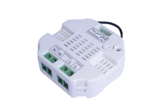
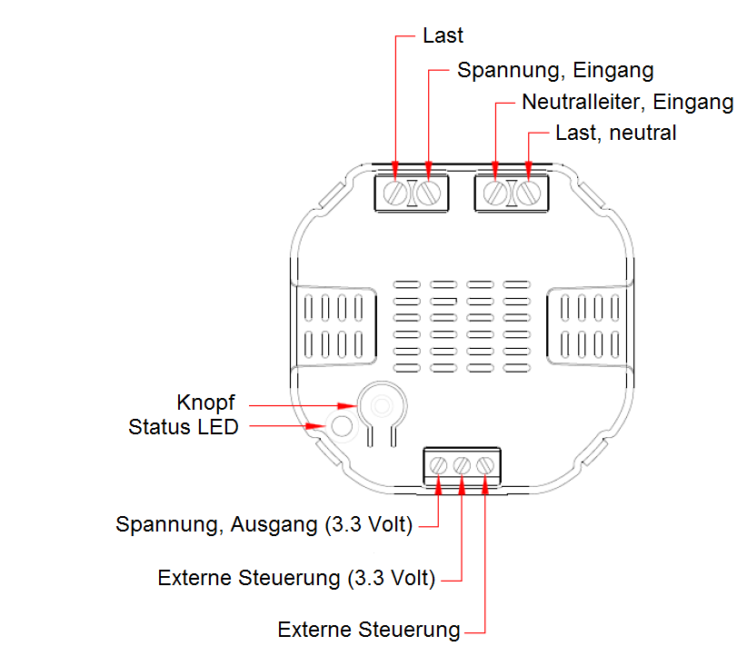

AEO_MSEI
Firmware Version : 1.24 |
 |
KurzinfoA Dieses Gerät ist ein Z-Wave-Aktor. Drücken Sie zum Inkludieren oder Exkludieren des Gerätes den Knopf neben der Status LED oder alternativ den externen Taster 6 mal schnell hintereinander. Wenn der Aeon Labs Micro Module Dimmer nicht in einem Z-Wave Netzwerk inkludiert ist, blinkt er gleichmäßig langsam. Weitergehende Informationen finden sich in den jeweiligen Abschnitten dieses Handbuches. |
Produktbeschreibung
Der Aeon Labs Wanddoseneinsatz ermöglicht die Nachrüstung einer Standard-Elektroinstallation zu einem intelligenten Z-Wave-basierten System. Das Gerät selbst fungiert als Dimmer. Zusätzlich kann das Gerät die Leistungaufnahme und den Stromverbrauch in kWh messen und an einen Z-Wave Controller oder ein Gateway melden. Das Gerät wird in einer Wanddose direkt hinter dem dort bereits befindlichen konventionellen Schalter platziert. Der Schalter schaltet den Verbraucher nun nicht mehr direkt, sondern liefert nur noch ein Steuersignal zum Aeon Labs-Gerät, das wiederum den Verbraucher steuert. Diese Steuerung erfolgt entweder über den lokalen Schalter oder über Funk.
Dieses Produkt funktioniert mit jeder Schalterserie und jedem Design, so lange in der Einbaudose genügend Platz zum Einbau vorhanden ist. In großen 65 mm tiefen Dosen sollte dies regelmäßig der Fall sein. In kleineren Dosen (z.B. 45 mm) hängt die Einsatzmöglichkeit von der benötigten Tiefe des konventionellen Schalters sowie vom Platzbedarf der gegebenenfalls ebenfalls in der Dose befindlichen Elektroverbinder ab.
Installationsanleitung
Das Gerät ist für ein 3-Leiter-System ausgelegt und benötigt daher einen Neutralleiter. Es wird nach dem Anschliessen von der Netzspannung gespeist.
Die untenstehende Abbildung zeigt die elektrische Verschaltung des Aktors. Die Stromzufuhr und der Verbraucher werden über die Anschlüsse Last, Neutralleiter und Spannungseingang angeschlossen. Die Anschlüsse 3.3 Volt und Externe Steuerung sind für die Steuerung per zusätzlichem Taster.

Nach dem elektrischen Anschließen des Gerätes, muss es in das Z-Wave Netz integriert werden.
Verhalten des Gerätes im Z-Wave Netz
I Im Auslieferungszustand ist das Gerät mit keinem Z-Wave-Netz verbunden. Damit es mit anderen Z-Wave Geräten kommunizieren kann, muss es in ein bestehendes Z-Wave Netz eingebunden werden. Dieser Prozess wird bei Z-Wave Inklusion genannt. Geräte können Netzwerke auch wieder verlassen. Dieser Prozess heißt bei Z-Wave Exklusion. Beide Prozesse werden von einem Controller gestartet, der dazu in einen Inklusion- bzw. Exklusion-Modus geschaltet werden muss. Das Handbuch des Controllers enthält Informationen, wie er in diese Modi zu schalten ist. Erst wenn der Controller des Z-Wave Netzes im Inclusion-Modus ist, können Geräte hinzugefügt werden. Das Verlassen des Netzes durch Exklusion führt zum Rücksetzen dieses Gerätes in den Auslieferungszustand.
Bedienung des Gerätes
Der Dimmereinsatz wird über externe Schaltwippen oder per Funk geschaltet. Der Druck auf die externe Schaltwippe schaltet den Dimmer ein und aus. Die Dimmfunktion wird erreicht, indem die Schaltwippe gedrückt gehalten wird, bis die gewünschte Helligkeitsstufe erreicht ist. Der Dimmereinsatz merkt sich die zuletzt eingestellte Lichtintensität und schaltet automatisch wieder auf die gleiche Helligkeitsstufe ein, auf der ausgeschaltet wurde.
Der Aeon Labs Micro Modul Dimmer mit Messfunktion ist in der Lage, die Leistungaufnahme und den Stromverbrauch in kWh zu messen und an das Z-Wave Gateway oder den Controller zu melden. Wenn diese Funktion vom Gateway bzw. Controller unterstütz wird, kann man den Energieverbrauch in der Nutzerschnittstelle anzeigen lassen. Für weitere Informationen zu dieser Funktion lesen Sie bitte die Bedienungsanleitung Ihres Gateways oder Controllers.
Node Information Frame
NIF Der Node Information Frame ist die Visitenkarte eines Z-Wave Gerätes. Es ist ein spezielles Datenpaket, in dem der Gerätetyp sowie die Funktionen des Gerätes bekanntgemacht werden. Inklusion und Exklusion eines Gerätes wird von diesem mit einem Node Information Frame beantwortet. Zusätzlich kann der Node Information Frame für bestimmte Konfigurationsprozesse des Z-Wave Netzes - zum Beispiel das Setzen von Assoziationen - benötigt werden.
Das Drücken der In-/Exklusionstaste am Gerät führt zum Senden eines Node Information Frame.
Bedeutung der LED-Signale
- Die Status LED blinkt, wenn der Aeon Labs Micro Modul Dimmer nicht in einem Z-Wave Netzwerk inkludiert ist.
- Wenn der Aeon Labs Micro Modul Dimmer erfolgreich inkludiert wurde, bleibt die Status LED für 10 Sekunden an oder aus, abhängig davon, ob der Dimmer an- oder ausgeschaltet ist.
Assoziationen - wie werden andere Geräte gesteuert?
A Z-Wave Geräte können andere Geräte direkt steuern. Diese direkte Steuerung heißt in Z-Wave Assoziation. In den steuernden Geräten muss dazu die Geräte-ID des zu steuernden Gerätes hinterlegt werden. Dies erfolgt in sogenannten Assoziationsgruppen. Eine Assoziationsgruppe ist immer an ein Ereignis im steuernden Gerät gebunden (Tastendruck oder Auslösen eines Sensors). Bei Eintritt dieses Ereignisses wird an alle in einer Assoziationsgruppe hinterlegten Geräte ein Steuerkommando gesendet.
Assoziationsgruppen:
| 1 | Status Reports (max. Anzahl Geräte: 5) |
Konfigurationseinstellungen
Z-Wave Produkte können direkt nach der Inklusion im Netz verwendet werden. Durch Konfigurationseinstellungen kann das Verhalten des Gerätes jedoch noch besser an die Anforderungen der Anwendung angepasst und zusätzliche Funktionen aktiviert werden.
WICHTIG: Manche Steuerungen erlauben nur die Konfiguration von vorzeichenbehafteten Werten zwischen -128 und 127. Um erforderliche Werte zwischen 128 und 255 zu programmieren, muss der gewünschte Wert minus 256 eingegeben werden. Beispiel: um einen Parameter auf einen Wert von 200 zu setzen, müsste der Wert 200-256 = -56 eingegeben werden, wenn nur positive Werte bis 128 akzeptiert werden. Bei Werten von 2 Byte Länge wird die gleiche Logik angewandt: Werte über 32768 werden als negative Werte angegeben
| Wert | Beschreibung |
|---|---|
| 0 | elektr. Leistung (Voreingestellt) |
| 1 | elektr. Spannung |
| Wert | Beschreibung |
|---|---|
| 0 — 65535 | Konfigurationsbytes (Voreingestellt 0) |
| Wert | Beschreibung |
|---|---|
| 0 | Deaktiviert (Voreingestellt) |
| 1 | ein Hail Kommando wird gesendet |
| 2 | ein BASIC Report wird gesendet |
| Wert | Beschreibung |
|---|---|
| 0 | Deaktiviert (Voreingestellt) |
| 1 | Aktiviert |
| Wert | Beschreibung |
|---|---|
| 0 — 32000 | W (Voreingestellt 50) |
| Wert | Beschreibung |
|---|---|
| 0 — 255 | % (Voreingestellt 10) |
| Wert | Beschreibung |
|---|---|
| 2 | Multisensor-Report |
| 4 | Zähler-Report als Watt |
| 8 | Zähler-Report als kWh (Voreingestellt) |
| Wert | Beschreibung |
|---|---|
| 2 | Multisensor-Report |
| 4 | Zähler-Report als Watt |
| 8 | Zähler-Report als kWh |
| Wert | Beschreibung |
|---|---|
| 2 | Multisensor-Report |
| 4 | Zähler-Report als Watt |
| 8 | Zähler-Report als kWh |
| Wert | Beschreibung |
|---|---|
| 0 — 65535 | Interval (Voreingestellt 720) |
| Wert | Beschreibung |
|---|---|
| 0 — 65535 | Interval (Voreingestellt 720) |
| Wert | Beschreibung |
|---|---|
| 0 — 32000 | Interval |
Technische Daten
| Explorer Frames | Nein |
| SDK | 5.02 pl3 |
| Geräteart | Slave with routing capabilities |
| Allgemeiner Z-Wave-Gerätetyp | Multilevel Switch |
| Spezieller Z-Wave-Gerätetyp | Multilevel Power Switch |
| Router | Ja |
| FLiRS | Nein |
| Firmware Version | 1.24 |